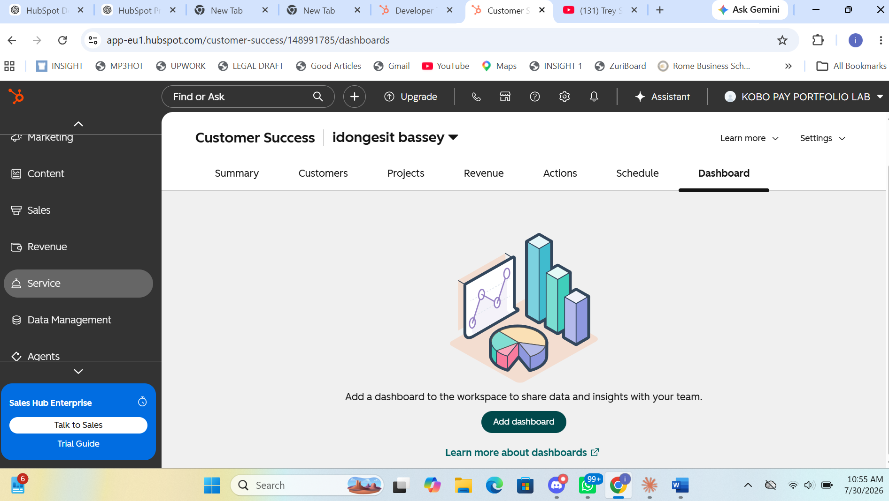
01 · OPERATING HUB
Customer Success Workspace
One place for health, prioritisation, actions and revenue-related work.
FLAGSHIP CASE STUDY · RETENTION & CHURN PREVENTION
Kobo Pay is a Simulated B2B Fintech Customer Success Environment I built in a HubSpot sandbox to demonstrate how I would structure customer data, identify risk, route CSM action and create earlier visibility around renewals. Customer accounts, financial values and outcomes are simulated; the system build and workflow evidence are functional portfolio work.
THE MONDAY THAT STARTED IT
I imagined opening my laptop on a Monday to find a cancellation from Zuri Stores, one of Kobo Pay’s largest merchants. The email was polite. No angry escalation. No dramatic final warning. The customer had simply decided to leave.
Working backwards through the account, the risk story was already there: login activity had fallen, a key champion had left, the replacement contact had not been properly onboarded, a failed-settlement issue was unresolved and transaction activity was deteriorating.
Churn is not an event. It is the last frame of a slow movie.
The problem was not a lack of signals. The problem was that the signals lived in different places and depended too heavily on a CSM noticing and remembering everything manually.
THE BUSINESS QUESTION
Turn scattered customer signals into structured CRM properties.
Use consistent criteria to distinguish Healthy, At Risk and Churn Risk.
Create CSM action automatically when health crosses a risk threshold.
Use health, support friction, ARR and renewal timing to focus attention.
THE SYSTEM
Login frequency
Open support tickets
Onboarding status
NPS
Healthy
At Risk
Churn Risk
Urgent task
Internal alert
Next Best Action
60-day visibility
Recovery plan
Renewal outcome
BUILD EVIDENCE
The proof follows the same order a CSM would use the system: data, support signals, health logic and automated action.

One place for health, prioritisation, actions and revenue-related work.
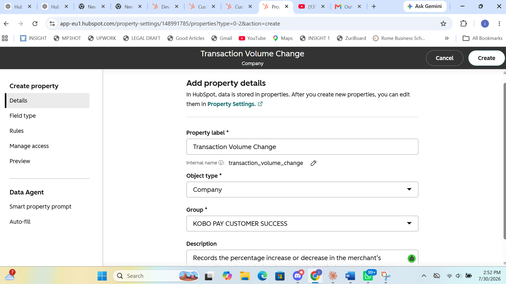
Custom company properties turn customer context into data HubSpot can score and automate against.
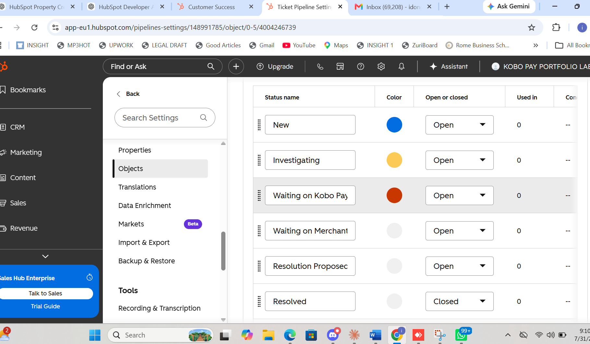
Support issues move through defined stages instead of becoming invisible risk.
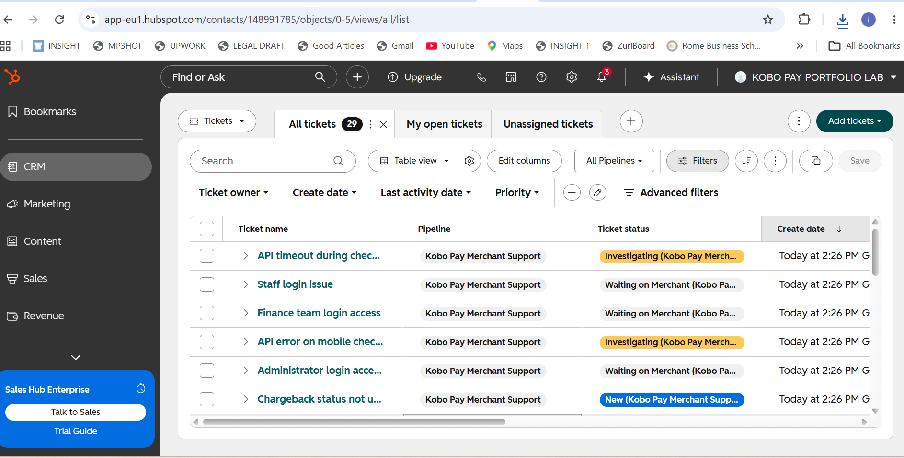
Operational volume gives the portfolio realistic account-health inputs.
100-POINT HEALTH MODEL
I did not want the score to depend on CSM instinct alone. Product engagement, onboarding, support experience and customer sentiment each contribute to the health picture.
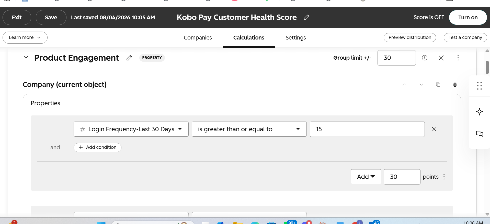
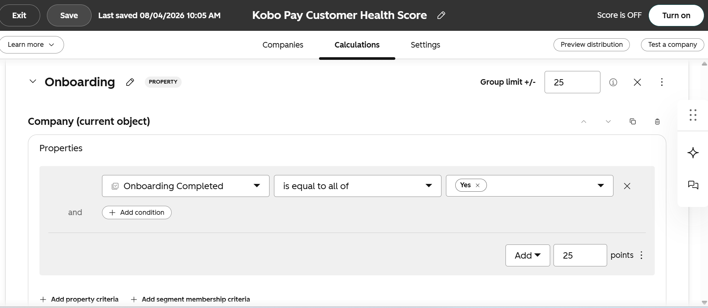
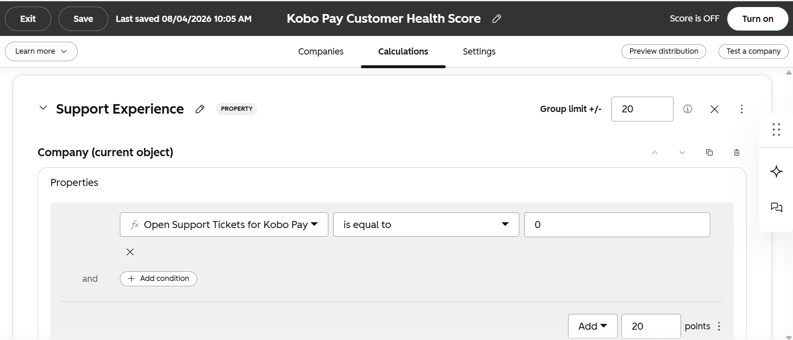
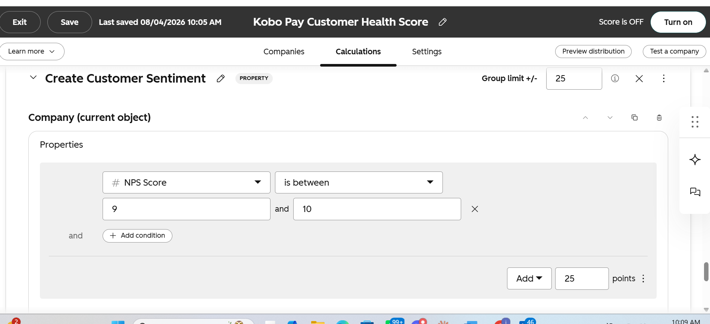
AUTOMATED INTERVENTION
When an account enters Churn Risk, the workflow moves the insight into the CSM’s working day: urgent task, internal alert and an updated Next Best Action.
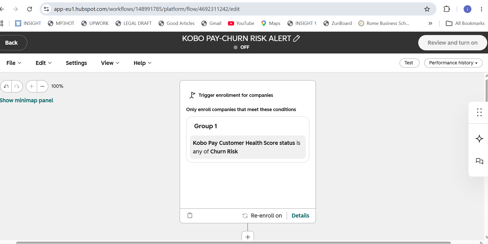
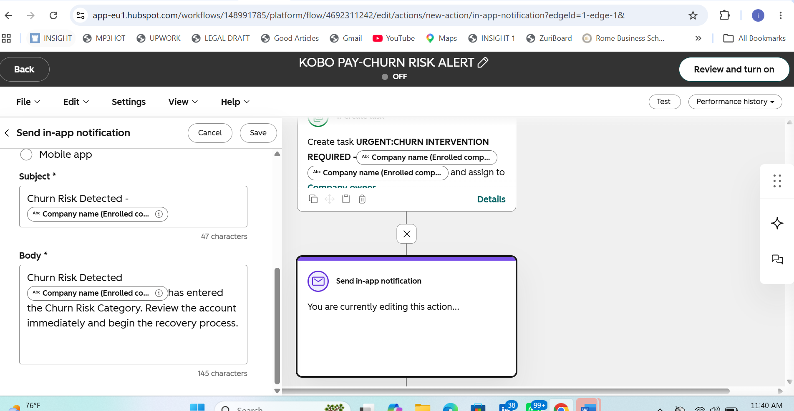
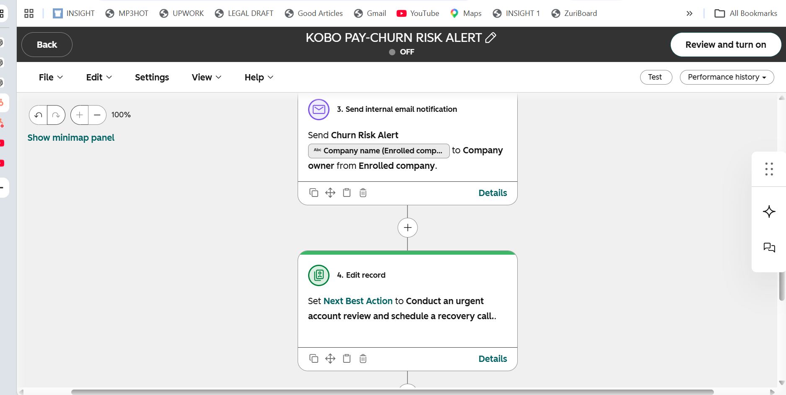

RECOVERY STORY · BRIGHT LOGISTICS
Portfolio simulation. Final public launch will add the completed Bright Logistics before/after HubSpot record screenshots.
FINAL HUBSPOT PROOF IN PROGRESS
WHY THIS MATTERS COMMERCIALLY
WHAT THIS PROJECT DEMONSTRATES
Leading indicators before cancellation.
Health, support risk, ARR and renewal timing.
Properties, tickets, scoring and workflows in HubSpot.
Repeatable monitoring instead of relying on memory.